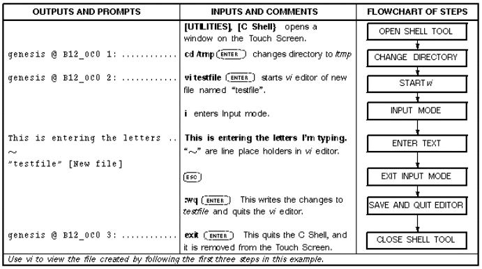

Operating Documentation
Direction 5440000, Rev# 5
Signa HDxt Service Methods
Module Version 1.0, Version Date 4/25/07
Operating Documentation |
There are three file editors available on the system; gedit, vi (unix editor- pronounced "vee-eye"), and Config File Manager. The gedit and vi editors can be used to edit any file, whereas the Config File Manager can only be used to change the contents of the MR Configuration files.
Gedit is a very easy-to-use text editor for viewing or editing on the system. The gedit editor can be started two different ways:
From a C-Shell, or
From the Service Desktop Utilities menu
On the MR Service Desktop, select [Utilities].
Under Toolbox, select [File Editor (gedit)]. Select [Click here to start this tool]. An empty tty window opens.
To open a file to read or edit, use the File pulldown menu to select Open. In the pop-up window, select the file or use the File Browser to locate and open the desired file. Click [OK].
After viewing or editing the file, select the File pulldown menu to select Save, or Quit (without saving changes) as appropriate.
On the Service Desktop, select [C Shell…].
In the C-shell window, type the directory path of the file you want to view or edit; for example: <cd /test ><Enter>.
To view or edit a file, type <gedit filename><Enter>.
When done viewing or editing the file, select File on the pulldown menu, then select Save, or Exit (without saving changes) as appropriate.
The vi editor provides a tty window to edit or read files on the system. Invoking vi from within a C-Shell Tool displays up to 38 lines of a file. The vi editor has over 100 commands. It is difficult to use and is recommended only for experienced users. Table 1 provides an overview of the commands needed to navigate within a file and handle the major editing tasks.
Table 1: Basic vi Editor Commands
| Command Types | Command | Description |
| Invoking vi | vi filename | Opens a window and displays about 30 lines of the file |
| Input Mode commands | l | Inserts text immediately in front of the cursor location |
| a | Appends text immediately following the cursor location | |
| o | Appends text below the current line | |
| O | Inserts text above the current line | |
| Exit/Input Mode | <Esc> | Places vi in command mode |
| Cursor positioning | h | Moves cursor one character to the left |
| i | Moves cursor one character to the right | |
| j | Moves cursor down one line | |
| k | Moves cursor up one line | |
| H | Moves cursor to top of screen | |
| M | Moves cursor to the middle of the screen | |
| L | Moves cursor to the bottom of the screen | |
| Saving and exiting vi | :w | Saves the changes to the current file |
| :wq | Saves the changes to the current file and quits vi | |
| :q! | Quits vi without saving changes | |
| Modifying text | x | Deletes the current character |
| dd | Deletes the current line | |
| #dd | Deletes the current line and # lines following it | |
| r | Replaces the current character with the character typed next | |
| u | Undoes the most recent delete or change | |
| U | Undoes all changes on the current line | |
| Search for Text String | /<text string> | Searches for the specified text throughout the file |
The vi editor has two modes of operation: Input mode and Command mode. While in Input mode, whatever is typed at the keyboard is entered into the file at the location of the cursor. While in Command mode, you can position the cursor anywhere in the file, delete characters, lines or groups of lines, write the changes to the file, and quit the editor. To change from Input Mode to Command Mode, press <Esc>. The following is a listing of basic commands to begin using vi; refer to Table 1 for their full descriptions. A sample vi edit session is shown in Illustration 1. Table 2 is a VI quick reference.
Illustration 1: Sample vi Edit Session

| NOTE: | All vi commands are case-sensitive. |
Table 2: Vi Commands Quick Reference
| Start vi editor | <vi filename> |
| Enter Input mode | i, a o, O |
| Exit Input mode | <Esc> |
| Cursor position commands | h, j, k, l, and <Enter> |
| Save and quit the editor | :w, :q!, :wq |
| Delete or replace text | x, dd, r u |